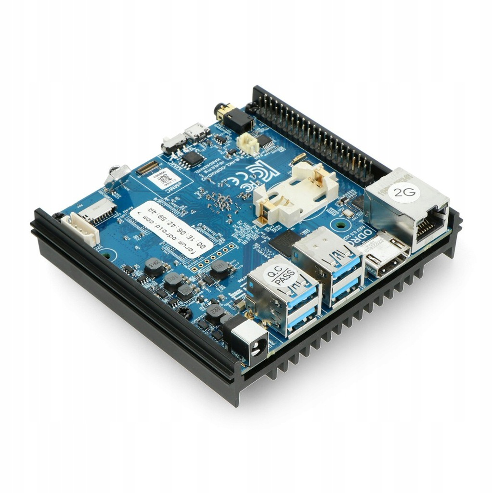

ODROID N2+
Jump to navigation
Jump to search
|
 odroid-n2plus runs postmarketOS | |
| Manufacturer | ODROID |
|---|---|
| Name | N2+ |
| Codename | odroid-n2plus |
| Released | 2020 |
| Category | testing |
| Original software | Ubuntu 20.04 or Android Pie |
| postmarketOS kernel | 5.14.3 |
| Hardware | |
| Chipset | Amlogic S922X 12nm |
| CPU | Quad-core Cortex-A73 @ 1.8GHz and Dual-core Cortex-A53 @ 1.9GHz |
| GPU | Mali-G52 GPU with 6x Execution Engines @ 800MHz |
| Display | none, but HDMI 2.0 connector up to 4K@60Hz with HDR,CEC,EDID |
| Storage | eMMC connector (8/16/32/64/128GB) and microSD slot (DS/HS modes up to UHS-I SDR104) |
| Memory | 4GB DDR4 with 32bit bus width, 2640 MT/s data rate (PC4-21333 grade), 1.2V low power design |
| Architecture | aarch64 |
| Unixbench Whet/Dhry score | 4142.2 |
{kind=link}
| USB Networking |
Unavailable
|
|---|---|
| Flashing |
Unavailable
|
| Touchscreen |
Unavailable
|
| Display |
Works
|
| WiFi |
Unavailable
|
| FDE |
Unavailable
|
| Mainline |
Works
|
| Battery |
Unavailable
|
| 3D Acceleration | |
| Audio |
Unavailable
|
| Bluetooth |
Unavailable
|
| Camera |
Unavailable
|
| GPS |
Unavailable
|
| Mobile data |
Unavailable
|
| SMS |
Unavailable
|
| Calls |
Unavailable
|
| USB OTG |
Unavailable
|
| NFC |
Unavailable
|
| Accelerometer |
Unavailable
|
|---|---|
| Magnetometer | |
| Ambient Light | |
| Proximity | |
| Hall Effect | |
| Ir TX | |
|---|---|
| TrustZone | |
Contents
Contributors
- k-laus
Users owning this device
- k-laus
How to enter flash mode
Installation
Preparation The device uses u-boot with petitboot loader loaded in spi memory. Installation to eMMC was tested:
pmbootstrap build linux-odroid-n2plus pmbootstrap build device-odroid-n2plus
Put an eMMC card into eMMC-to-USB3 reader, assumption is it appears as /dev/sdX (replace sdX with correct devicename below), and install to it:
pmbootstrap install --sdcard /dev/sdX
Afterwards, still this manual step is needed to create u-boot compatible initramfs:
mount /dev/sdX1 /mnt/boot && \ cd /mnt/boot && \ mkimage -A arm64 -T ramdisk -C none -n initramfs -d initramfs initramfs.uimg
See also
odroid-n2plus branch - https://gitlab.com/k-laus/pmaports/-/commit/5fff9e5aaa20be0756af4fb27ba4cbc6cf09c94a